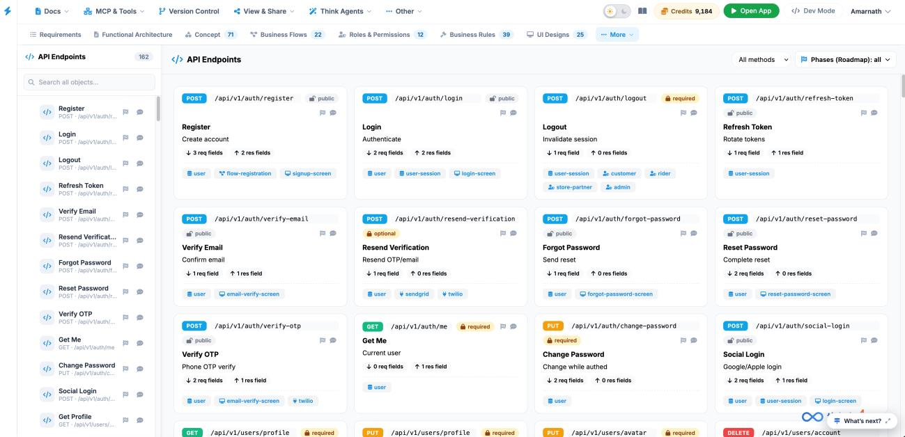

API Endpoints
The API Endpoints tab serves as the central API directory and payload specification canvas, detailing all REST interface routes, HTTP methods, request/response structures, and authentication requirements across the system.

Key UI Components
- API Endpoints Sidebar: Itemizes all 162 backend endpoints (such as POST /api/v1/auth/register, POST /api/v1/auth/login, POST /api/v1/auth/logout, GET /api/v1/auth/me, and PUT /api/v1/auth/change-password) with quick-search functionality.
-
Endpoint Cards Grid: Interactive tiles detailing each API route:
- HTTP Method & Path: Displays color-coded badges for request types (e.g., POST in blue, GET in green, PUT in orange, DELETE in red) and exact URL paths.
- Authentication Tag: Indicates access constraints such as public, required, or optional.
- Payload Specs: Summarizes the count of required request fields (req fields) and return response fields (res fields).
- Mapping Badges: Displays direct linkages to data models, business flows, user interface screens, and third-party integrations (e.g., twilio, sendgrid).
- Canvas Toolbar: Top-right filtering controls including HTTP method filters (All methods dropdown) and a Phases (Roadmap) selector.